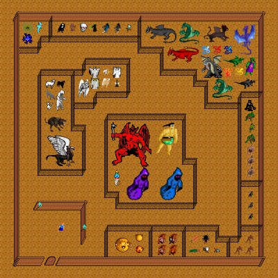

Map Preno's house, in region The Port of Wolfsburg. Map level: 30.
Map view:

(click for larger view)
Exits from this map:
Exits to this map:
Monsters found on map: Ancient dragon, ancient red dragon, angel, Angel Knight, Archon, baby dragon, beholder, bone drake, chaos witch, cherub, cold dragon hatchling, cyclops, Dark Gryphon, demilich, dragon hatchling, dragon of chaos, dragonman, Dread, electric dragon, electric dragon hatchling, faerie dragon, flying ant, giant centipede, giant rat, gnoll, gnoll champion, gnoll chief, goblin, goblin champion, goblin chief, grimreaper, High Angel, holy ghost, Jessy, large centipede, Legendary dragon, Lich, light angel, living chaos, Major djinn, messenger, nazgul, neko chan, ogre, ogre champion, ogre chief, Olog-hi, polar bear, Preno, Pygmy Assassin, Pygmy of the Forest, shadow dragon, shadowtiger pup, sheep, skull, small armoured troll, small troll, sorcerer, Spectre, spider, strange beholder, unusual kobold, vampire, wizard, wolf, wyvern, wyvern of chaos, xan.
The Port of Wolfsburg's map index | Region index | Global map index | World map
{kind=link}